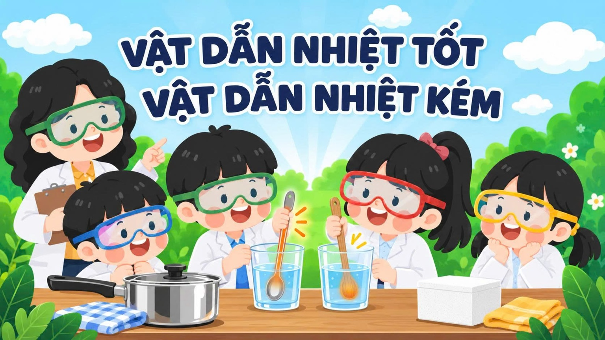
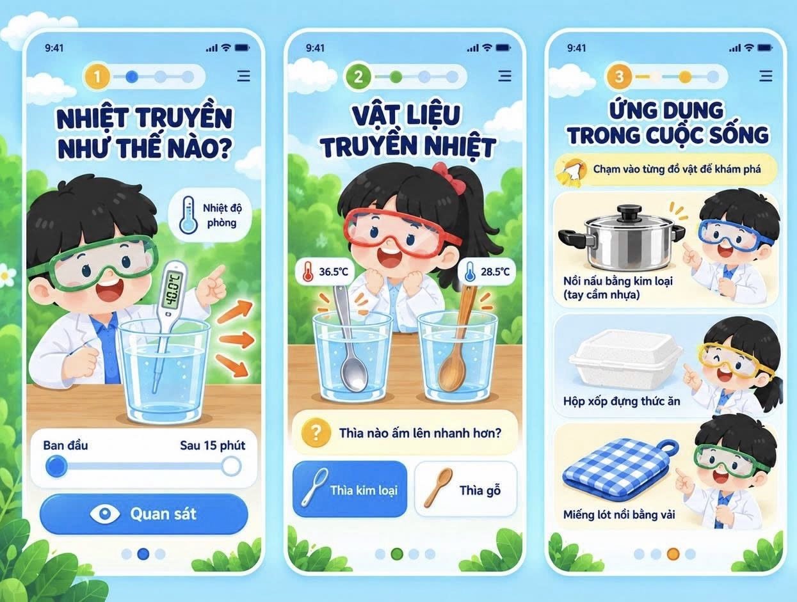

Vật dẫn nhiệt tốt,
vật dẫn nhiệt kém
🔥 Thử thách giữ nhiệtKhám phá vì sao có vật nóng lên nhanh, có vật nóng lên chậm.

Giới thiệu tình huống
28°C
Lời dẫn: Một cốc nước ấm được đặt trong phòng. Em hãy dự đoán nhiệt độ của nước sẽ thay đổi như thế nào sau 15 phút.
Học sinh dự đoán
Sau 15 phút, nhiệt độ của nước sẽ như thế nào?
Quan sát mô phỏng
Nước: 40°C
Phòng: 28°C
Nhấn “Bắt đầu quan sát” hoặc kéo thanh thời gian.
Trả lời câu hỏi
1. Ban đầu, nước và không khí trong phòng, bên nào có nhiệt độ cao hơn?
2. Sau 15 phút, nhiệt độ của nước tăng hay giảm?
3. Nhiệt đã truyền từ đâu đến đâu?
Nhận phản hồi
Rút ra kết luận
Kéo từ vào chỗ trống (trên điện thoại có thể chạm từ rồi chạm ô):
Giới thiệu thí nghiệm
Không yêu cầu học sinh chạm trực tiếp vào thìa.
Học sinh dự đoán
Sau cùng một khoảng thời gian, cán của chiếc thìa nào sẽ ấm lên nhanh hơn?
Quan sát mô phỏng
Nhiệt kế ảo được đặt tại cùng một vị trí trên hai cán thìa.
Trả lời câu hỏi
1. Cán của thìa nào ấm lên nhanh hơn?
2. Nhiệt truyền qua vật liệu nào nhanh hơn?
3. Thìa kim loại thuộc nhóm nào?
4. Thìa gỗ thuộc nhóm nào?
Phân loại vật liệu
Kéo – thả hoặc chạm vật rồi chạm nhóm:
🔥 Vật dẫn nhiệt tốt
❄️ Vật dẫn nhiệt kém
Rút ra kết luận
Lưu ý: Dùng từ “dẫn nhiệt kém”, không có nghĩa là vật liệu hoàn toàn ngăn được nhiệt.
Quan sát đồ vật
Hãy chạm vào từng đồ vật để khám phá vật liệu và công dụng của chúng.
Khám phá từng bộ phận
🍲 Thân nồi
Thân nồi được làm bằng kim loại.
Câu hỏi: Vì sao kim loại phù hợp để làm thân nồi?
Đáp án: Vì kim loại dẫn nhiệt tốt, giúp thức ăn nhận nhiệt nhanh.
🖐️ Tay cầm
Tay cầm thường được làm bằng nhựa.
Câu hỏi: Vì sao tay cầm không được làm hoàn toàn bằng kim loại?
Đáp án: Vì nhựa dẫn nhiệt kém hơn, giúp hạn chế nhiệt truyền đến tay.
Ghép đồ vật với công dụng
Chọn một đồ vật, sau đó chọn công dụng phù hợp:
Liên hệ nhiệm vụ STEM
Muốn làm hộp giúp chai nước ấm nguội chậm hơn, chúng ta nên quan tâm đến nhóm vật liệu nào?
Rút ra kết luận
Ở nhiệm vụ này, website chưa nói cụ thể học sinh phải dùng xốp, vải hay bông. Việc lựa chọn vật liệu vẫn để các em quyết định.
🔥 Dẫn nhiệt tốt
❄️ Dẫn nhiệt kém
Nếu muốn giữ đồ uống nóng lâu hơn, em ưu tiên vật liệu nào?
Thiết kế nào có khả năng giữ nhiệt tốt hơn?
Sản phẩm: Hộp giữ nhiệt
Mục đích: Giữ đồ uống nóng lâu hơn.
Vật liệu: Carton, xốp, giấy bạc
Cách làm: Lót xốp bên trong, dán carton bên ngoài, bọc giấy bạc.
Hoàn thành!
Bạn đã hoàn thành các nhiệm vụ trên website.
5 câu sau video: 0/5
3 câu kiểm tra nhanh: 0/3
Tổng: 0/8
Hãy chờ đến lớp để cùng chế tạo sản phẩm và thử nghiệm nhé!